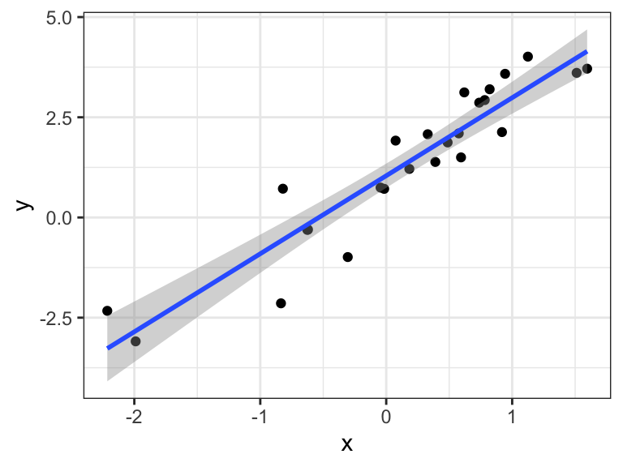
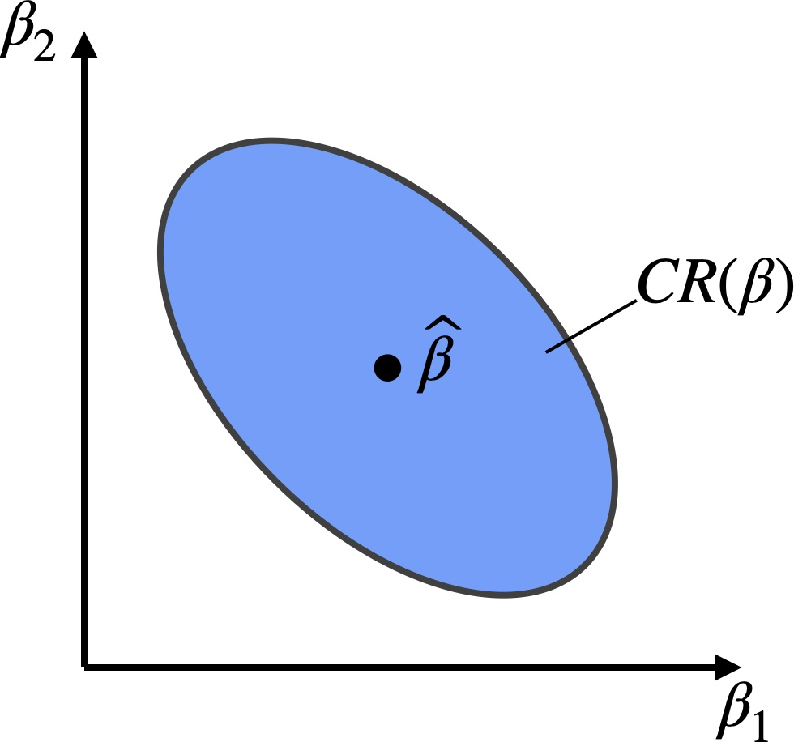
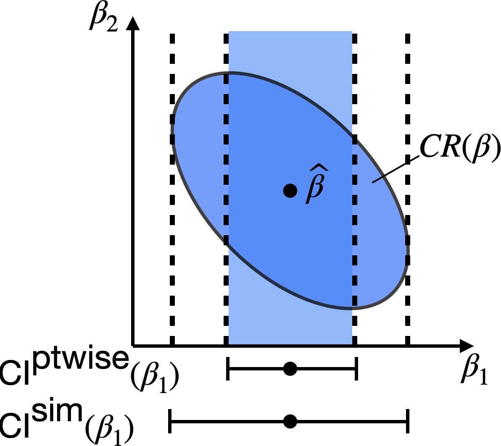
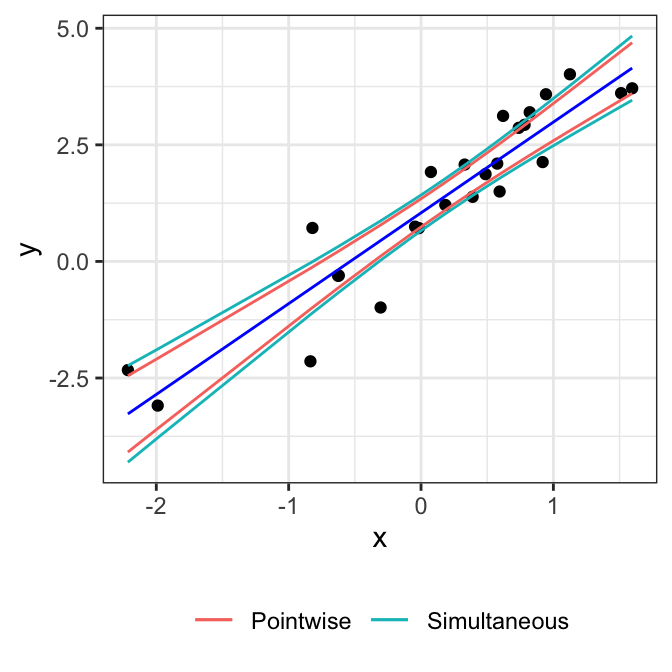

10 Confidence intervals
See also Agresti 3.3, Dunn and Smyth 2.8.4-2.8.5
In addition to hypothesis testing, we often want to construct confidence intervals for various quantities. As with hypotheses testing, we will split the target quantities into two categories: univariate and multivariate.
10.1 Confidence intervals for univariate quantities
10.1.1 Confidence interval for a coefficient
Under \(H_0: \beta_j = 0\), we showed that \(\frac{\widehat \beta_j}{\widehat{\sigma}/s_j} \sim t_{n-p}\). The same argument shows that for arbitrary \(\beta_j\), we have
\[ \frac{\widehat \beta_j - \beta_j}{\widehat{\sigma}/s_j} \sim t_{n-p}. \]
We can use this relationship to construct a confidence interval for \(\beta_j\) as follows:
\[ \small \begin{split} &1-\alpha \\ &\quad = \mathbb{P}[|t_{n-p}| \leq t_{n-p}(1-\alpha/2)] \\ &\quad = \mathbb{P}\left[\left|\frac{\widehat \beta_j - \beta_j}{\widehat{\sigma}/s_j}\right| \leq t_{n-p}(1-\alpha/2) \right] \\ &\quad = \mathbb{P}\left[\beta_j \in \left[\widehat \beta_j - \frac{\widehat{\sigma}}{s_j}t_{n-p}(1-\alpha/2), \widehat \beta_j + \frac{\widehat{\sigma}}{s_j}t_{n-p}(1-\alpha/2) \right]\right] \\ &\quad \equiv \mathbb{P}\left[\beta_j \in \left[\widehat \beta_j - \text{SE}(\widehat \beta_j)t_{n-p}(1-\alpha/2), \widehat \beta_j + \text{SE}(\widehat \beta_j)t_{n-p}(1-\alpha/2) \right]\right] \\ &\quad \equiv \mathbb{P}[\beta_j \in \text{CI}(\beta_j)]. \end{split} \tag{10.1}\]
The confidence interval \(\text{CI}(\beta_j)\) defined above therefore has \(1-\alpha\) coverage. Because of the duality between confidence intervals and hypothesis tests, the factors contributing to powerful tests (Chapter 9) also lead to shorter confidence intervals.
10.1.2 Confidence interval for \(\mathbb{E}[y|\boldsymbol{\tilde x}]\)
Suppose now that we have a new predictor vector \(\boldsymbol{\tilde x} \in \mathbb{R}^p\). The mean of the response for this predictor vector is \(\mathbb{E}[y|\boldsymbol{\tilde x}] = \boldsymbol{\tilde x}^T \boldsymbol{\beta}\). Plugging in \(\boldsymbol{\tilde x}\) for \(\boldsymbol{c}\) in the relation (8.3), we obtain
\[ \frac{\boldsymbol{\tilde x}^T \boldsymbol{\widehat{\beta}} - \boldsymbol{\tilde x}^T \boldsymbol{\beta}}{\widehat{\sigma} \sqrt{\boldsymbol{\tilde x}^T (\boldsymbol{X}^T \boldsymbol{X})^{-1} \boldsymbol{\tilde x}}} \sim t_{n-p}. \]
From this, we can derive that
\[ \begin{split} \text{CI}(\boldsymbol{\tilde x}^T \boldsymbol{\beta}) &\equiv \boldsymbol{\tilde x}^T \boldsymbol{\widehat{\beta}} \pm \text{SE}(\boldsymbol{\tilde x}^T \boldsymbol{\widehat{\beta}}) \cdot t_{n-p}(1-\alpha/2) \\ &\equiv \boldsymbol{\tilde x}^T \boldsymbol{\widehat{\beta}} \pm \widehat{\sigma} \sqrt{\boldsymbol{\tilde x}^T (\boldsymbol{X}^T \boldsymbol{X})^{-1} \boldsymbol{\tilde x}} \cdot t_{n-p}(1-\alpha/2) \end{split} \tag{10.2}\]
is a \(1-\alpha\) confidence interval for \(\boldsymbol{\tilde x}^T \boldsymbol{\beta}\). Consider the special case of the simple linear regression \(y = \beta_0 + \beta_1 x + \epsilon\). Then, confidence intervals for \(\beta_0 + \beta_1 \tilde x\) for each \(\tilde x \in \mathbb R\) sweep out confidence bands for the regression line.
We see that the width of the confidence band appears to be the smallest around the center of the data. To verify this, let \(\bar x\) be the mean of the observed \(x\) values. Centering \(x\) leads to the following reparameterized regression: \[ y = \beta_0' + \beta_1 (x - \bar x) + \epsilon. \] The width of the confidence interval (10.2) is proportional to the square root of \(\boldsymbol{\tilde x}^T (\boldsymbol{X}^T \boldsymbol{X})^{-1} \boldsymbol{\tilde x}\). Applying this to the centered vector \(\boldsymbol{\tilde x} = (1, \tilde x - \bar x)^T\) and the centered matrix \(\boldsymbol{X} = (\boldsymbol 1, \boldsymbol x - \bar x \boldsymbol 1)\), we get \[ \begin{split} \boldsymbol{\tilde x}^T (\boldsymbol{X}^T \boldsymbol{X})^{-1} \boldsymbol{\tilde x} &= (1, \tilde x - \bar x) \begin{pmatrix} n & 0 \\ 0 & \sum_i (x_i - \bar x)^2 \end{pmatrix}^{-1} \begin{pmatrix} 1 \\ \tilde x - \bar x \end{pmatrix} \\ &= \frac{1}{n} + \frac{(\tilde x - \bar x)^2}{\sum_i (x_i - \bar x)^2}. \end{split} \] We see that this quantity is minimized at \(\tilde x = \bar x\), as expected.
10.1.3 Prediction interval for \(y|\boldsymbol{\tilde x}\)
Instead of creating a confidence interval for a point on the regression line, we may want to create a confidence interval for a new draw \(\tilde y\) of \(y\) for \(\boldsymbol{x} = \boldsymbol{\tilde x}\), i.e., a prediction interval. Note that
\[ \begin{split} \tilde y - \boldsymbol{\tilde x}^T \widehat{\beta} &= \boldsymbol{\tilde x}^T \beta + \tilde \epsilon - \boldsymbol{\tilde x}^T \widehat{\beta} \\ &= \tilde \epsilon + \boldsymbol{\tilde x}^T (\beta-\widehat{\beta}) \\ &\sim N(0, \sigma^2 + \sigma^2 \boldsymbol{\tilde x}^T (\boldsymbol{X}^T \boldsymbol{X})^{-1} \boldsymbol{\tilde x}). \end{split} \]
Therefore, we have
\[ \frac{\tilde y - \boldsymbol{\tilde x}^T \widehat{\beta}}{\widehat{\sigma}\sqrt{1 + \boldsymbol{\tilde x}^T (\boldsymbol{X}^T \boldsymbol{X})^{-1} \boldsymbol{\tilde x}}} \sim t_{n-p}, \]
which leads to the \(1-\alpha\) prediction interval
\[ \begin{split} &\boldsymbol{\tilde x}^T \boldsymbol{\widehat{\beta}} \pm \widehat{\sigma} \sqrt{1+\boldsymbol{\tilde x}^T (\boldsymbol{X}^T \boldsymbol{X})^{-1} \boldsymbol{\tilde x}} \cdot t_{n-p}(1-\alpha/2) \\ &\quad\equiv \boldsymbol{\tilde x}^T \boldsymbol{\widehat{\beta}} \pm \text{SE}(\boldsymbol{\tilde x}^T \boldsymbol{\widehat{\beta}}) \cdot t_{n-p}(1-\alpha/2). \end{split} \tag{10.3}\]
Remark: Prediction with confidence in machine learning.
The entire field of supervised machine learning is focused on accurately predicting \(\tilde y\) from \(\boldsymbol{\tilde x}\), usually using nonlinear functions \(\widehat{f}(\boldsymbol{\tilde x})\). In addition to providing a guess for \(\tilde y\), it is often useful to quantify the uncertainty in this guess. In other words, it is useful to come up with a prediction interval (or prediction region) \(\text{PI}(\tilde y)\) such that
\[ \mathbb{P}[\tilde y \in \text{PI}(\tilde y) \mid \boldsymbol{\tilde x}] \geq 1-\alpha. \tag{10.4}\]
For example, in safety-critical applications of machine learning like self-driving cars, it is essential to have confidence in predictions. Unfortunately, beyond the realm of linear regression, it is hard to come up with intervals satisfying (10.4) for each point \(\boldsymbol{\tilde x}\). However, the emerging field of conformal inference provides guarantees on average over possible values of \(\boldsymbol{x}\):
\[ \mathbb{P}[y \in \text{PI}(y)] = \mathbb{E}[\mathbb{P}[y \in \text{PI}(y) \mid \boldsymbol{x}]] \geq 1-\alpha. \tag{10.5}\]
Remarkably, these guarantees place no assumption on the machine learning method used and require only that the data points on which \(\widehat{f}\) is trained are exchangeable (an even weaker condition than i.i.d.). While the unconditional guarantee (10.5) is weaker than the conditional one (10.4), it can be obtained for modern machine learning and deep learning models.
10.2 Confidence regions and simultaneous intervals
10.2.1 Confidence regions
A multivariate generalization of a confidence interval is a confidence region. We will discuss the construction of a confidence region for \(\boldsymbol{\beta}\) in the linear regression model. A \(1-\alpha\) confidence region for \(\boldsymbol{\beta}\) is a set \(\text{CR}(\boldsymbol{\beta}) \subseteq \mathbb R^p\) such that \[ \mathbb{P}[\boldsymbol{\beta} \in \text{CR}(\boldsymbol{\beta})] \geq 1-\alpha. \]
To construct such a region, note first that
\[ \frac{\frac{1}{p}\|\boldsymbol{X} \boldsymbol{\widehat{\beta}} - \boldsymbol{X} \boldsymbol{\beta}\|^2}{\widehat{\sigma}^2} \sim F_{p, n-p}. \]
Hence, we have
\[ \mathbb{P}[\|\boldsymbol{X} \boldsymbol{\widehat{\beta}} - \boldsymbol{X} \boldsymbol{\beta}\|^2 \leq p \widehat{\sigma}^2 F_{p, n-p}(1-\alpha)] \geq 1-\alpha. \]
Hence, the region
\[ \text{CR}(\boldsymbol{\beta}) \equiv \{\boldsymbol{\beta}: (\boldsymbol{\widehat{\beta}} - \boldsymbol{\beta})^T \boldsymbol{X}^T \boldsymbol{X} (\boldsymbol{\widehat{\beta}} - \boldsymbol{\beta}) \leq p \widehat{\sigma}^2 F_{p, n-p}(1-\alpha)\} \subseteq \mathbb{R}^p \]
is a \(1-\alpha\) confidence region for the vector \(\boldsymbol{\beta}\). It’s easy to see that \(\text{CR}(\boldsymbol{\beta})\) is an ellipse centered at \(\boldsymbol{\widehat{\beta}}\).

10.2.2 Simultaneous intervals
As a byproduct of confidence regions for the multivariate \(\boldsymbol \beta\), we can construct simultaneous intervals for univariate quantities. To motivate the definition of simultaneous intervals, note that the intervals in Section 10.1 have pointwise coverage. For example, we have
\[ \mathbb{P}[\beta_j \in \text{CI}(\beta_j)] \geq 1-\alpha \quad \text{for each } j. \]
or
\[ \mathbb{P}[\boldsymbol{\tilde x}^T \boldsymbol{\beta} \in \text{CI}(\boldsymbol{\tilde x}^T \boldsymbol{\beta})] \geq 1-\alpha \quad \text{for each } \boldsymbol{\tilde x}. \]
Sometimes a stronger simultaneous coverage guarantee is desired, e.g.,
\[ \mathbb{P}[\beta_j \in \text{CI}^{\text{sim}}(\beta_j) \ \text{for each } j] \geq 1-\alpha \tag{10.6}\]
or
\[ \mathbb{P}[\boldsymbol{\tilde x}^T \boldsymbol{\beta} \in \text{CI}^{\text{sim}}(\boldsymbol{\tilde x}^T \boldsymbol{\beta}) \ \text{for each } \boldsymbol{\tilde x}] \geq 1-\alpha. \tag{10.7}\]
To obtain such simultaneous confidence intervals, we can leverage the fact that the confidence region \(\text{CR}(\boldsymbol \beta)\) is for the entire vector \(\boldsymbol{\beta}\). We can therefore define
\[ \text{CI}^{\text{sim}}(\beta_j) \equiv \{\beta_j: \boldsymbol{\beta} \in \text{CR}(\boldsymbol{\beta}) \}. \]
Then, these confidence intervals will satisfy the simultaneous coverage property (10.6). We will obtain a more explicit expression for \(\text{CI}^{\text{sim}}(\beta_j)\) shortly.

Similarly, we may define the simultaneous confidence regions
\[ \text{CI}^{\text{sim}}(\boldsymbol{\tilde x}^T \boldsymbol{\beta}) \equiv \{\boldsymbol{\tilde x}^T \boldsymbol{\beta}: \boldsymbol{\beta} \in \text{CR}(\boldsymbol{\beta})\}. \]
Let us find a more explicit expression for the latter interval. For notational ease, let us define \(\boldsymbol{\Sigma} \equiv \boldsymbol{X}^T \boldsymbol{X}\). Then, note that if \(\boldsymbol{\beta} \in \text{CR}(\boldsymbol{\beta})\), then by the Cauchy-Schwarz inequality we have
\[ \begin{split} (\boldsymbol{\tilde x}^T \boldsymbol{\widehat{\beta}}-\boldsymbol{\tilde x}^T \boldsymbol{\beta})^2 &= \|\boldsymbol{\tilde x}^T (\boldsymbol{\widehat{\beta}}-\boldsymbol{\beta})\|^2 \\ &= \|(\boldsymbol{\Sigma}^{-1/2}\boldsymbol{\tilde x})^T \boldsymbol{\Sigma}^{1/2}(\boldsymbol{\widehat{\beta}}-\boldsymbol{\beta})\|^2 \\ &\leq \|(\boldsymbol{\Sigma}^{-1/2}\boldsymbol{\tilde x})\|^2\|\boldsymbol{\Sigma}^{1/2}(\boldsymbol{\widehat{\beta}}-\boldsymbol{\beta})\|^2 \\ &\leq \boldsymbol{\tilde x}^T \boldsymbol{\Sigma}^{-1}\boldsymbol{\tilde x} p \widehat{\sigma}^2 F_{p, n-p}(1-\alpha), \end{split} \]
i.e.,
\[ \begin{split} \boldsymbol{\tilde x}^T \boldsymbol{\beta} &\in \boldsymbol{\tilde x}^T \boldsymbol{\widehat{\beta}} \pm \widehat{\sigma} \sqrt{\boldsymbol{\tilde x}^T (\boldsymbol{X}^T \boldsymbol{X})^{-1}\boldsymbol{\tilde x}} \sqrt{pF_{p, n-p}(1-\alpha)} \\ &\equiv \boldsymbol{\tilde x}^T \boldsymbol{\widehat{\beta}} \pm \text{SE}(\boldsymbol{\tilde x}^T \boldsymbol{\widehat{\beta}})\cdot\sqrt{pF_{p, n-p}(1-\alpha)}. \end{split} \tag{10.8}\]
Defining the above interval as \(\text{CI}^{\text{sim}}(\boldsymbol{\tilde x}^T \boldsymbol{\beta})\) gives us the simultaneous coverage property (10.7). These simultaneous intervals are called Working-Hotelling intervals. Comparing to equation (10.3), we see that the simultaneous interval is the pointwise interval expanded by a factor of \(\sqrt{pF_{p, n-p}(1-\alpha)}/t_{n-p}(1-\alpha/2)\). In the case of simple linear regression, we can obtain simultaneous confidence bands (Working-Hotelling bands) for the regression line.

Specializing to the case \(\boldsymbol{\tilde x} \equiv \boldsymbol{e_j}\), we get an expression for the simultaneous intervals for each coordinate:
\[ \begin{split} \text{CI}^{\text{sim}}(\beta_j) &\equiv \widehat \beta_j \pm \widehat{\sigma} \sqrt{(\boldsymbol{X}^T \boldsymbol{X})^{-1}_{jj}} \sqrt{pF_{p, n-p}(1-\alpha)} \\ &\equiv \text{SE}(\widehat \beta_j)\sqrt{pF_{p, n-p}(1-\alpha)}, \end{split} \tag{10.9}\]
which again is the pointwise interval (10.1) expanded by a factor of \(\sqrt{pF_{p, n-p}(1-\alpha)}/t_{n-p}(1-\alpha/2)\).